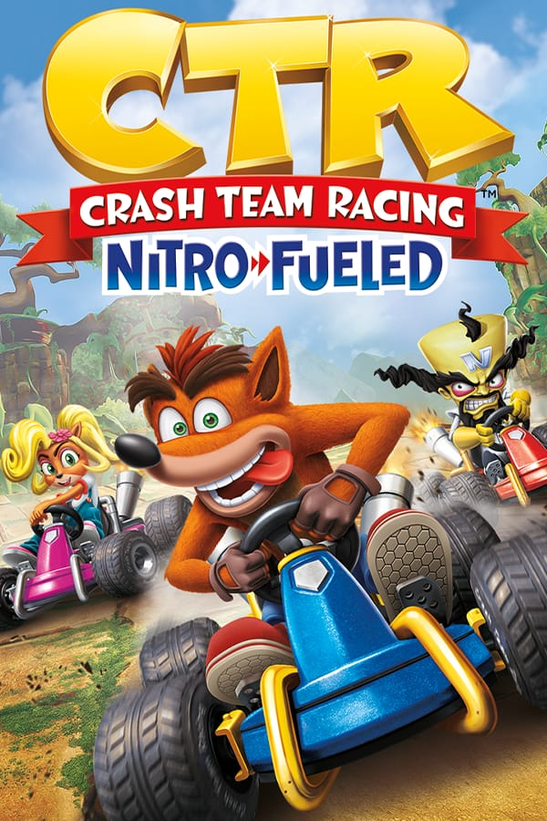

Confira aqui uma lista com os melhores jogos para PS4/PS5:
THE LAST OF US: PART 2
Gênero: Ação e aventura.
Modos de jogo: Um jogador.
Lançamento: Junho de 2020.
Desenvolvedor: Naughty Dog.
Descrição de jogo:
Em um cenário pós apocalíptico após cinco anos do jogo “The Last Of Us” Ellie percebe o sumiço de Joel e Tommy e decide sair em uma busca para encontra-los em um universo repleto de perigos e ameaças mortais.
GOD OF WAR/strong>
Gênero: Ação e aventura.
Modos de Jogo: Um jogador.
Lançamento: Abril de 2018.
Desenvolvedor: SIE Santa Monica Studio.
Descrição de jogo:
Kratos, após realizar sua vingança contra os deuses do olimpo nos jogos anteriores vai para mitologia nórdica onde vive com seu filho Atreus. Após Faye, mãe de Atreus, falecer ela pede que suas cinzas fossem jogadas nos picos mais altos dos nove reinos. E assim Kratos e Atreus partem em uma jornada enfrentando mundos e criaturas desconhecidas para realizar o ultimo desejo de Faye.
FIFA 21
Gênero: Esportes.
Modos de jogo: Multijogador/on-line.
Lançamento: Outubro de 2020.
Desenvolvedor: Electronic Arts, EA Sports, EA Vancouver, EA Romania.
Descrição de jogo:
Novos gráficos, novos recursos e novas equipes e um modo co-op sem igual. Uma partida de futebol ultrarrealista com ainda mais emoção com uma jogabilidade sem igual.
Uncharted 4: A Thief’s End
Gênero: Ação e aventura.
Modos de jogo: Um jogador.
Lançamento: maio de 2016.
Desenvolvedor: Naughty Dog.
Descrição de jogo:
O caçador de tesouros, Nathan Drake pós se aposentar acaba sendo persuadido a fazer um último trabalho nele ele irá procurar e investigar pistas para achar o tesouro do pirata Henry Avery, enfrentando uma perigosa jornada pela frente em busca do tesouro.
Final Fantasy 7 Remake
Gênero: RPG de ação.
Modos de jogo: Um jogador.
Lançamento: Abril de 2020.
Desenvolvedor: Square Enix, Square Enix First Development Division.
Descrição de jogo:
Cloud Strife é um mercenário que aceita trabalhar para o grupo ecoterrorista Avalanche nele ele luta pois uma empresa usa o Mako energia vital do planeta prejudicando o meio ambiente e podendo vir a causar a destruição do planeta.
SPIDER MAN - MILES MORALES
Gênero: Ação e aventura.
Modos de jogo: Um jogador.
Lançamento: Novembro de 2020.
Desenvolvedor: Insomniac Games.
Descrição de jogo:
Miles Morales está se adaptando a sua nova casa e se esforçando para seguir os paços e os conselhos de seu mentor Peter Parker para que ele possa ser o homem aranha salvar e ajudar as pessoas.
GTA V
Gênero: Ação e aventura.
Modos de jogo: Um jogador/on-line.
Lançamento: Setembro de 2013.
Desenvolvedor: Rockstar North.
Descrição de jogo:
Um ladrão de banco aposentado chamado Michael acaba fazendo um acordo com FIB, e então volta a sua antiga profissão. Com o acordo feito Michael chama seu melhor amigo Trevor que é cão de briga dele para juntar-se a ele, e para completar a equipe Franklin, um rapaz com um obscuro com habilidades de volante inigualáveis, mas nenhuma experiencia em crime.
DEVIL MAY CRY 5
Gênero: Ação e Aventura.
Modos de jogo: Um jogador.
Lançamento: Março de 2019.
Desenvolvedor: Capcom.
Descrição de jogo:
Nero e Dante se veem em uma nova ameaça, que está prestes a destruir o mundo e interligar o inferno com o mundo dos humanos. E para salvar o mundo Dante, Nero e seu novo Aliado V, precisam unir forças para salvar a humanidade mais uma vez.

CRASH TEAM RACING NITRO FUELED
Gênero: Ação, aventura e esportes.
Modos de jogo: multijogador/on-line.
Lançamento: Junho de 2019.
Desenvolvedor: Beenox.
Descrição de jogo:
Novos gráficos, com uma jogabilidade evoluída e dinâmica, crash deve ganhar todas as corridas de kart enfrentando novos cenários com novos desafiantes.
Uma luta épica, mortal e sangrenta o sobrevivente ao final da partida é o grande vencedor deste torneio impiedoso;
THE LAST GUARDIAN
Gênero: Ação aventura.
Modos de jogo: Um jogador.
Lançamento: Dezembro de 2016.
Desenvolvedor: Team Ico, SIE Japan Studio, Sony Interactive Entertainment.
Descrição de jogo:
Um grande mistério deve ser revelado e é necessário muita dedicação e empenho para isso a história é contada por um analepse e para entender o contexto será necessário juntar as informações e as pistas para entender a história.
OVERWATCH
Gênero: Battle royale.
Modos de jogo: Multijogador/on-line.
Lançamento: Maio de 2016.
Desenvolvedor: Blizzard Entertainment, Iron Galaxy.
Descrição de jogo:
Um jogo de tiro em primeira pessoa onde o principal objetivo é eliminar os inimigos sem morrer até o final da partida, usando de todos os artifícios possíveis para se manter vivo.
Assassin´s Creed Valhalha
Gênero: RPG de ação e aventura.
Modos de jogo: Um jogador.
Lançamento: Novembro de 2020.
Desenvolvedor: Ubisoft Montreal, Ubisoft Milan.
Descrição de jogo:
No mundo nórdico existem diversas ameaças, seja vinda de inimigos ou ate mesmo de amigos e é neste mundo que Eivor terá de dominar terras e proteger e cuidar de seu povo na era viking.
OUTLAST 2
Gênero: Terror e horror.
Modos de jogo: Um jogador.
Lançamento: Abril de 2017.
Desenvolvedor: Red Barrels Studio.
Descrição de jogo:
Blake Langermann é um repórter investigativo que sofreu um acidente de helicóptero e se vê perdido em um lugar misteriosamente suspeito e assustador e ao sofrer o acidente sua esposa também some e então ele desbrava o misterioso local para encontrá-la.
É necessário furtividade para poder fugir de eventuais problemas, como armadilhas mortais, será necessário pensar para poder fugir de situações perigosas e mortais.
Fiel a realidade de uma guerra, gráficos realistas e jogabilidade tática e elaborada, o principal objetivo é sobreviver até o fim da partida, lutando por sua vida e eliminando os adversários.
BRAWHALLA
Gênero: Jogo eletrônico de Luta.
Modos de jogo: Cooperativo/Multijogador
Lançamento: 30 de abril de 2014.
Desenvolvedor: Blue Mammoth Games.
Descrição de jogo:
Uma luta épica, você pode convidar seus amigos para batalhar em ambiente com gráficos incríveis jogabilidade histórica.
CALL OF DUTY: WARZONE
Gênero: Battle Royale
Modos de jogo: Multijogador/On-line
Lançamento: 10 de março de 2020.
Desenvolvedor: Raven Software, Infinity Ward.
Descrição de jogo:
O objetivo é proteger sua equipe da forma como for necessário, e derrotar a equipe inimiga.
FORTNITE
Gênero: Battle royale.
Modos de jogo: multijogador/online.
Lançamento: Julho de 2017.
Desenvolvedor: Epic Games, People Can Fly.
Descrição de jogo:
Na batalha vale de tudo, e é necessário usar tudo a seu alcance para vencer, para tornar-se o vencedor terá de eliminar o maior número de oponentes possível e chegar vivo até o final da partida.